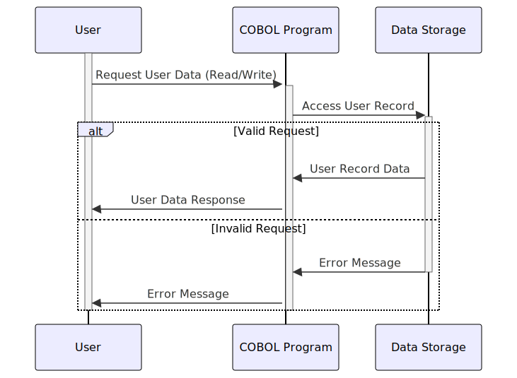

Gerado em: 1º de outubro de 2024
Título do Documento: Especificação da Estrutura de Dados da Conta de Usuário
Descrição Resumida: Este documento descreve a estrutura dos dados da conta de usuário em um sistema, com foco em como esses dados são organizados e armazenados. É essencialmente um modelo para gerenciar contas de usuário de forma segura e eficiente.
Histórias do Usuário: Como administrador do sistema, preciso de uma maneira padronizada de armazenar e gerenciar informações da conta de usuário, incluindo credenciais de login, detalhes pessoais e dados relacionados ao sistema, para garantir acesso seguro e administração eficiente do usuário.
Épico Relacionado: 6 - Gerenciamento de Usuários e Segurança
Requisitos Funcionais:
- O sistema deve armazenar com segurança IDs de usuário e senhas para autenticação.
- O sistema deve armazenar informações básicas do usuário, incluindo nome, sobrenome e tipo de usuário.
- O sistema deve registrar e armazenar informações relacionadas ao sistema, incluindo nomes de transações, timestamps (data e hora), nomes de programas usados e mensagens de erro.
- O sistema deve suportar diferentes esquemas de codificação de caracteres (ASCII, EBCDIC) para garantir compatibilidade com vários sistemas.
Requisitos Não Funcionais:
- Segurança: O sistema deve priorizar o armazenamento seguro de dados confidenciais do usuário, particularmente senhas, usando métodos adequados de hashing e criptografia.
- Desempenho: As operações de recuperação e armazenamento de dados relacionadas a contas de usuário devem ser eficientes para evitar lentidão do sistema.
- Confiabilidade: O sistema deve garantir a precisão e consistência dos dados da conta do usuário ao longo do tempo.
- Manutenibilidade: A estrutura de dados deve ser facilmente compreensível e modificável para futuros aprimoramentos do sistema.
Critérios de Aceitação:
- As contas de usuário podem ser criadas, modificadas e excluídas sem erros.
- O sistema autentica corretamente os usuários com base nas credenciais armazenadas.
- As informações relacionadas ao sistema são registradas com precisão e associadas às ações correspondentes do usuário.
- A estrutura de dados se integra perfeitamente a outros componentes do sistema, como mecanismos de autenticação e autorização.
Melhorias de Código:
- Segurança de Senha: Implemente algoritmos robustos de hashing de senha (por exemplo, bcrypt, scrypt) para proteger as senhas contra acesso não autorizado. Evite armazenar senhas em texto simples.
- Validação de Dados: Incorpore verificações de validação de dados para cada campo para garantir a integridade dos dados e evitar que dados inválidos sejam armazenados.
- Tratamento de Erros: Implemente mecanismos abrangentes de tratamento de erros para gerenciar e registrar graciosamente quaisquer problemas encontrados durante as operações de dados.
- Documentação de Código: Adicione comentários claros e concisos ao código para explicar o propósito e a funcionalidade de diferentes campos de dados e seções.
Melhorias de Segurança:
- Criptografia de Dados: Criptografe dados confidenciais do usuário, em trânsito e em repouso, para adicionar uma camada extra de segurança.
- Controle de Acesso: Implemente medidas rígidas de controle de acesso para restringir o acesso não autorizado às informações da conta do usuário. Somente pessoal autorizado deve ter permissão para visualizar, modificar ou excluir esses dados.
- Auditoria: Implemente trilhas de auditoria para rastrear todas as ações relacionadas a contas de usuário, incluindo quem acessou os dados, quais alterações foram feitas e quando essas alterações ocorreram.
Diagrama Conceitual:

–Made by “Smart Engineering” (by Compass.UOL)–